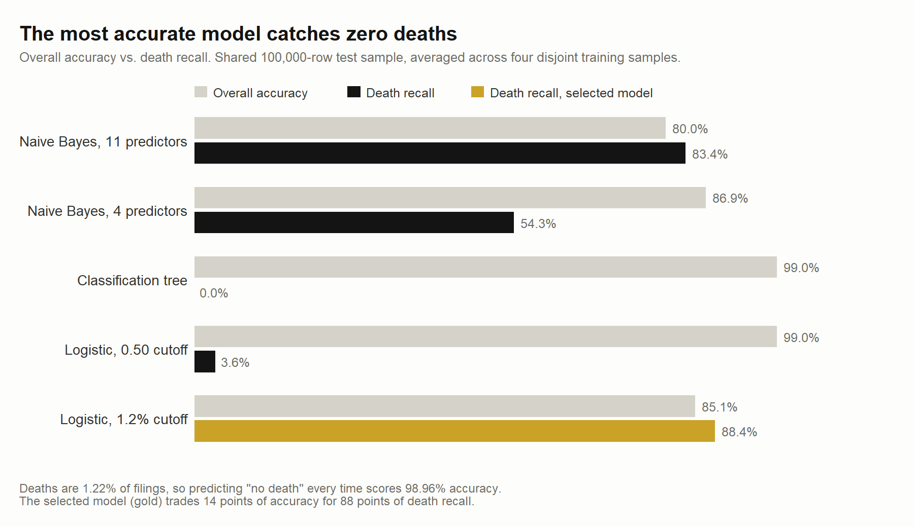
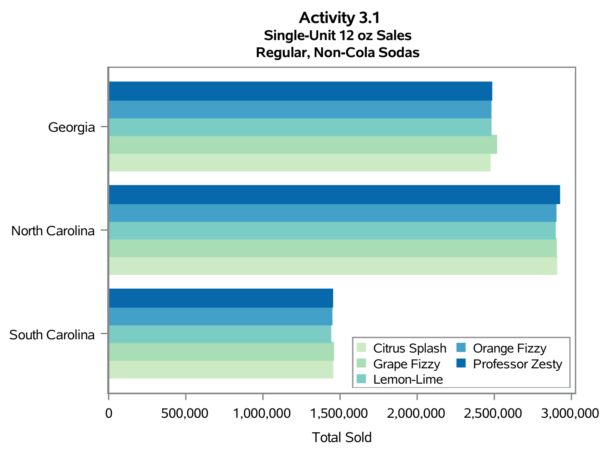

I turn messy data into decisions people actually use.
My interest in statistics started with sports: box scores, win probabilities, and the argument over which numbers actually matter. What kept me in it had less to do with sports than with the habit underneath. I like making decisions from evidence instead of instinct, and I like having a structured way to work a problem rather than guessing at it.
That took me to NC State for a BS in Statistics with minors in Computer Programming and Business Administration, and then to SportsMEDIA Technology. I spent two years there working live national broadcasts, where the player and puck tracking data I managed had to be correct on the first pass. I also prepared and validated the training data behind machine learning models for tennis, golf, and basketball.
Now I am at Wake Forest pointing that same rigor at business problems in financial services, healthcare, and consulting, building Python scripts and Excel models for practical business use. What I want next is a data analyst role where I can take real data and turn it into recommendations people actually use.
Ninety seconds on who I am, where I came from, and what I want to build.

Deaths are 1.2 percent of FDA adverse event filings, so a model can reach 99 percent accuracy by never predicting one. I tuned the decision threshold to match that prevalence instead, catching 88 percent of fatal cases so a reviewer can triage the filings that matter rather than reading 3.2 million of them.

Eight regional sources arrived in six different file layouts, with the same products named three different ways. I built the pipeline that reconciled all of it into one governed dataset, then derived a per capita sales metric so counties of different sizes could finally be compared against each other.